Biscoe Dream Torgersen
Adelie 44 56 52
Chinstrap 0 68 0
Gentoo 124 0 0Introduction to R - Day 3
Lidiya Mishieva
05 February, 2026
Intro
Day 1: basic syntax, classes, objects, functions
Day 2: base package, tidy programming & tidyverse
Day 3:
Part 1: Summarizing data / tables
Part 2: Reporting with RMarkdown / Quarto
Day 4: Git & RStudio
Still missing: further operations on vectors. graphs, referencing in rmd/qmd, citations and bibliography
Recap last week
tidy paradigm
working with data using base and tidyverse packages
import and export, subsetting and filtering, rlong/wide format, variable transformations
Part 1
Summarizing data
table()prop.table()addmargins()addmargins(prop.table(table(penguins$species, penguins$island), margin = NULL)) # margin=1 for rows, margin=2 for columnsBiscoe Dream Torgersen Sum Adelie 0.1279070 0.1627907 0.1511628 0.4418605 Chinstrap 0.0000000 0.1976744 0.0000000 0.1976744 Gentoo 0.3604651 0.0000000 0.0000000 0.3604651 Sum 0.4883721 0.3604651 0.1511628 1.0000000
Summarizing data
Summarizing data
summary()can be used as a general method to get a summary of different model outputs
can be used to get a summary of an entire dataset
species island bill_len bill_dep Adelie :152 Biscoe :168 Min. :32.10 Min. :13.10 Chinstrap: 68 Dream :124 1st Qu.:39.23 1st Qu.:15.60 Gentoo :124 Torgersen: 52 Median :44.45 Median :17.30 Mean :43.92 Mean :17.15 3rd Qu.:48.50 3rd Qu.:18.70 Max. :59.60 Max. :21.50 NA's :2 NA's :2 flipper_len body_mass sex year Min. :172.0 Min. :2700 female:165 Min. :2007 1st Qu.:190.0 1st Qu.:3550 male :168 1st Qu.:2007 Median :197.0 Median :4050 NA's : 11 Median :2008 Mean :200.9 Mean :4202 Mean :2008 3rd Qu.:213.0 3rd Qu.:4750 3rd Qu.:2009 Max. :231.0 Max. :6300 Max. :2009 NA's :2 NA's :2
Summarizing data
- dplyr package:
group_by()andsummarize()
penguins %>%
select(-c(year)) %>%
drop_na() %>%
group_by(island, sex) %>%
summarise(across(where(is.numeric), mean))# A tibble: 6 × 6
# Groups: island [3]
island sex bill_len bill_dep flipper_len body_mass
<fct> <fct> <dbl> <dbl> <dbl> <dbl>
1 Biscoe female 43.3 15.2 206. 4319.
2 Biscoe male 47.1 16.6 213. 5105.
3 Dream female 42.3 17.6 190. 3446.
4 Dream male 46.1 19.1 196. 3987.
5 Torgersen female 37.6 17.6 188. 3396.
6 Torgersen male 40.6 19.4 195. 4035.Summary tables for reports
many different (not very practical) ways for producing summary tables
check out this guide:
https://cran.r-project.org/web/packages/DescTools/vignettes/TablesInR.pdf
dataframe is a table and can be used always as such
Summary tables for reports
programming and formatting usually with different packages
gtsummarypackage for programming (unless it is a very specific table)package for formatting depends on the output file
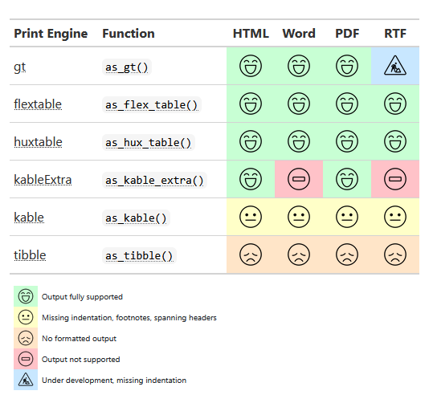
Source: https://www.danieldsjoberg.com/gtsummary/articles/rmarkdown.html
Tables with gtsummary
summary tables from dataframes/tibbles
regression tables from model outputs
merging and stacking of tables
some features for customization
Tables with gtsummary - descriptives
| Variable |
Treatment Received
|
p-value2 | ||
|---|---|---|---|---|
| Indometh, N = 295 (49%)1 | Placebo, N = 307 (51%)1 | Overall, N = 602 (100%)1 | ||
| Age | 44 (33, 54) | 46 (36, 55) | 45 (35, 54) | 0.15 |
| Missing | 0 | 0 | 0 | |
| Risk | 0.2 | |||
| Median (Q1, Q3) | 2.50 (2.00, 3.00) | 2.50 (1.50, 3.00) | 2.50 (1.50, 3.00) | |
| Min, Max | 1.00, 5.50 | 1.00, 4.50 | 1.00, 5.50 | |
| Missing | 0 | 0 | 0 | |
| type | 0.6 | |||
| 0_no SOD | 47 (16%) | 60 (20%) | 107 (18%) | |
| 1_type 1 | 38 (13%) | 43 (14%) | 81 (13%) | |
| 2_type 2 | 139 (47%) | 135 (44%) | 274 (46%) | |
| 3_type 3 | 71 (24%) | 69 (22%) | 140 (23%) | |
| Missing | 0 | 0 | 0 | |
| 1 Median (Q1, Q3); n (%) | ||||
| 2 Two Sample t-test; Pearson’s Chi-squared test | ||||
Tables with gtsummary - descriptives
# example datasets for different types of medical data
library(medicaldata)
# creating tables
library(gtsummary)
indo_rct %>%
# filter the columns of the dataset
select(c("rx", "age", "risk", "type")) %>%
# select(c(rx, age, risk, type)) %>% # also works here!
# recode the labels of the treatment variable rx
# factor is a character vector, that allows labeling and ordering
mutate(rx = factor(
rx,
levels = c("1_indomethacin", "0_placebo"),
labels = c("Indometh", "Placebo"))
) %>%
# specify a summary table
tbl_summary(
# stratification by treatment
by = rx,
# you can also use the include argument instead of selecting before
# include = c("rx", "age", "risk", "type"),
# provide labels to the variables
label = list(
age ~ "Age",
risk ~ "Risk"
# ...
),
# whether to report the number of missing values
# default is missing="ifany"
missing = "always",
missing_text = "Missing",
# define statistics to be reported
statistic = list(
all_continuous() ~ "{median} ({p25}, {p75})",
all_categorical() ~ "{n} ({p}%)",
risk ~ c("{median} ({p25}, {p75})", "{min}, {max}")),
# continuous2 allows for multi-line statistics
type = list(risk ~ "continuous2")
) %>%
# add the total column
add_overall(last=TRUE) %>%
# perform tests
add_p(
# you can also define the test separately for each variable
test = list(all_continuous() ~ "t.test",
all_categorical() ~ "chisq.test"),
test.args = list(all_tests("t.test") ~ list(var.equal = TRUE))) %>%
# print the p-value in bold if below a threshhold
bold_p(t=0.05) %>%
# render variable names in bold
bold_labels() %>%
# update the header
modify_header(label = "**Variable**") %>%
modify_header(all_stat_cols() ~ "**{level}**, N = {n} ({style_percent(p)}%)") %>%
modify_spanning_header(all_stat_cols() ~ "**Treatment Received**")Tables with gtsummary - survival data
| Variable |
Survival
|
p-value1 | |||
|---|---|---|---|---|---|
| 6 Month | 12 Month | 18 Month | 24 Month | ||
| Chemotherapy Treatment | 0.2 | ||||
| Drug A | 99% (97%, 100%) | 91% (85%, 97%) | 70% (62%, 80%) | 47% (38%, 58%) | |
| Drug B | 99% (97%, 100%) | 86% (80%, 93%) | 60% (51%, 70%) | 41% (33%, 52%) | |
| 1 Log-rank test | |||||
Tables with gtsummary - survival data
library(survival)
# survival
tbl_survfit(
# compute survival curves
survfit(
Surv(ttdeath, death) ~ trt, trial
# default is kaplan-meier
# type=c("kaplan-meier","fleming-harrington", "fh2")
),
# specify timepoints for estimating survival probabilities
times = c(6, 12, 18, 24),
# change the header label
label_header = "**{time} Month**"
) %>%
# render variable names in bold
bold_labels() %>%
# add log-rank test
add_p() %>%
# print the p-value in bold if below a threshhold
bold_p() %>%
# some other header label modifications
modify_header(label = "**Variable**") %>%
modify_spanning_header(all_stat_cols() ~ "**Survival**")Tables with gtsummary - regression tables
Tables with gtsummary - regression tables
| Characteristic | OR | 95% CI | p-value |
|---|---|---|---|
| Chemotherapy Treatment | |||
| Drug A | — | — | |
| Drug B | 1.13 | 0.60, 2.13 | 0.7 |
| Age | 1.02 | 1.00, 1.04 | 0.10 |
| Grade | |||
| I | — | — | |
| II | 0.85 | 0.39, 1.85 | 0.7 |
| III | 1.01 | 0.47, 2.15 | >0.9 |
| Abbreviations: CI = Confidence Interval, OR = Odds Ratio | |||
Tables with gtsummary - regression tables
| Characteristic | HR | 95% CI | p-value |
|---|---|---|---|
| Chemotherapy Treatment | |||
| Drug A | — | — | |
| Drug B | 1.30 | 0.88, 1.92 | 0.2 |
| Grade | |||
| I | — | — | |
| II | 1.21 | 0.73, 1.99 | 0.5 |
| III | 1.79 | 1.12, 2.86 | 0.014 |
| Age | 1.01 | 0.99, 1.02 | 0.3 |
| Abbreviations: CI = Confidence Interval, HR = Hazard Ratio | |||
Tables with gtsummary - regression tables
| Characteristic |
Tumor Response
|
Time to Death
|
||||
|---|---|---|---|---|---|---|
| OR | 95% CI | p-value | HR | 95% CI | p-value | |
| Chemotherapy Treatment | ||||||
| Drug A | — | — | — | — | ||
| Drug B | 1.13 | 0.60, 2.13 | 0.7 | 1.30 | 0.88, 1.92 | 0.2 |
| Age | 1.02 | 1.00, 1.04 | 0.10 | 1.01 | 0.99, 1.02 | 0.3 |
| Grade | ||||||
| I | — | — | — | — | ||
| II | 0.85 | 0.39, 1.85 | 0.7 | 1.21 | 0.73, 1.99 | 0.5 |
| III | 1.01 | 0.47, 2.15 | >0.9 | 1.79 | 1.12, 2.86 | 0.014 |
| Abbreviations: CI = Confidence Interval, HR = Hazard Ratio, OR = Odds Ratio | ||||||
Tables with gtsummary - regression tables
# specify a logistic model
mod1 <- glm(response ~ trt + age + grade, trial, family = binomial)
# build a regression table
t1 <- tbl_regression(mod1, exponentiate = TRUE)
# specify a cox model
mod2 <- coxph(Surv(ttdeath, death) ~ trt + grade + age, trial)
# build a regression table
t2 <- tbl_regression(mod2, exponentiate = TRUE)
# merge tables
t3 <- tbl_merge(
tbls = list(t1, t2),
tab_spanner = c("**Tumor Response**", "**Time to Death**")
)
t1
t2
t3Tables with gtsummary - regression tables
# table containing a set of univariable regressions
tbl_uvregression(
trial,
method = coxph,
y = Surv(ttdeath, death),
exponentiate = TRUE,
include = c("age", "grade", "response"),
pvalue_fun = label_style_pvalue(digits = 2)
)| Characteristic | N | HR | 95% CI | p-value |
|---|---|---|---|---|
| Age | 189 | 1.01 | 0.99, 1.02 | 0.33 |
| Grade | 200 | |||
| I | — | — | ||
| II | 1.28 | 0.80, 2.05 | 0.31 | |
| III | 1.69 | 1.07, 2.66 | 0.024 | |
| Tumor Response | 193 | 0.50 | 0.31, 0.78 | 0.003 |
| Abbreviations: CI = Confidence Interval, HR = Hazard Ratio | ||||
Part 2
Reporting with RStudio
A quarto document
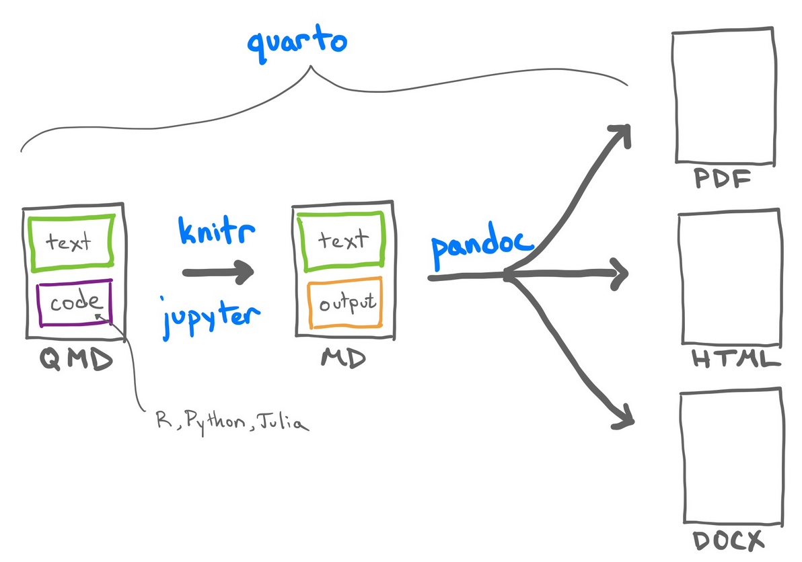
Markup languages
text-encoding systems that specifiy the structure & formatting of a document
well-known examples: TeX, HTML, XML …
combine plain text & code used for formatting
markdown (md) is a simplified markup language that uses minimal code
Markup languages - HTML example
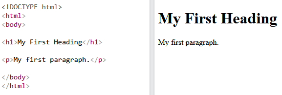

Markdown basics
Markdown basics - text
| Markdown Syntax | Output |
|---|---|
|
italics, bold, bold italics |
|
superscript2 / subscript2 |
|
|
|
verbatim code |
Markdown basics - headings
| Markdown syntax | Output |
|
Heading 1 |
|
Heading 2 |
|
Heading 3 |
|
Heading 4 |
Markdown basics - footnotes
- Footnote reference
Here is a footnote reference[^1].
[^1]: Here is the footnote. - Inline note
Here is an inline note.^[Inlines notes are easier to write, since you don't have to pick an identifier and move down to type the note.]Markdown basics - inserting images
{fig-align="left"}Markdown basics
There are many more formatting options such as formatting tables and diagrams, adding page breaks etc.
Checkout the quarto website for details:
Maths using TeX
(1) inline maths
In simple linear regression, the model is $y = \beta_0 + \beta_1 x + \varepsilon$. In simple linear regression, the model is \(y = \beta_0 + \beta_1 x + \varepsilon\).
(2) standalone equation
In simple linear regression, the model is
$$
\begin{equation}
y = \beta_0 + \beta_1 x + \varepsilon.
\end{equation}
$$In simple linear regression, the model is
\[ \begin{equation} y = \beta_0 + \beta_1 x + \varepsilon. \end{equation} \]
Adding code to RMD / QMD
Option 1: code chunk
Option 2: inline code
Add output of the code within text
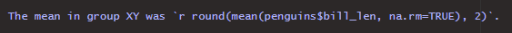
The mean in group XY was 43.92.

YAML - Yet Another Markup Language
In Quarto it is used for overall document configuration
A YAML section is placed in the beginning of the document
- 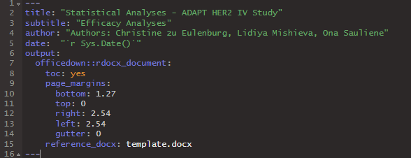
A code chunk can also contain a YAML section
- 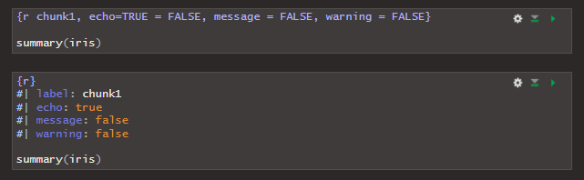
Code chunks - execution options
| Option | Description |
eval: true |
whether to evaluate the code |
echo: true |
whether to show the code |
include: true |
whether to include the code |
cache: true |
whether to cache the resutls |
Code chunks - figure control
| Option | Description |
fig-cap: "My figure" |
figure caption |
fig-width: 8 |
whether to show the code |
fig-height: 6 |
width in inches |
fig-align: "center" |
height in inches |
fig-dpi: 300 |
resolution |
out-width: "80%" |
output width |
layout-ncol: 2 |
number of columns for plots |
Code chunks - output control
| Option | Description |
warning: false |
hide warnings |
message: false |
hide messages |
error: false |
hide error messages |
output: false |
hide all output |
Sourcing code
Option 1: put all code into the code chunks or inline code
Option 2: source your code from an external script
You can do both (use results produced by the sourced code in the code chunks or inline code)
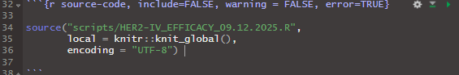
Rendering tables
Rendering tables - flextable
A package for creating and formatting tables
Own class: flextable
You can transform a gtsummary object to a flextable object
Add additional formatting
- check out this webpage: https://ardata-fr.github.io/flextable-book/index.html
Else the format of gtsummary table is taken over to a flextable object
You can export it to .docx


Flextable to docx - fitting to page
# ============================================================
# Fit a flextable to a LANDSCAPE page
# ============================================================
FitFlextableToPageLanscape <- function(
# select a flextable object
ft,
# usable page width in inches:
# A4 landscape width (29.7 cm)
# minus 5 cm margins, converted to inches
pgwidth = (29.7 - 5) / 2.54) {
# apply consistent formatting
ft_out <- ft %>%
fontsize(size = 9, part = "body") %>% # body text size
fontsize(size = 10, part = "header") %>% # header text size
autofit() %>% # initial auto column widths
height_all(0.25, part = "body") %>% # compact row height
hrule(rule = "exact", part = "body") # fixed row height (vs auto)
# rescale column widths to exactly fill the available page width
ft_out <- width(
ft_out,
width = dim(ft_out)$widths * pgwidth / flextable_dim(ft_out)$widths
)
return(ft_out)
}
# ============================================================
# Fit a flextable to a PORTRAIT page
# ============================================================
FitFlextableToPagePortrait <- function(
# select a flextable object
ft,
# usable page width in inches:
# A4 portrait width (21 cm)
# minus 5 cm margins, converted to inches
pgwidth = (21 - 5) / 2.54) {
# apply consistent formatting
ft_out <- ft %>%
fontsize(size = 9, part = "body") %>% # body text size
fontsize(size = 10, part = "header") %>% # header text size
autofit() %>% # initial auto column widths
height_all(0.25, part = "body") %>% # compact row height
hrule(rule = "exact", part = "body") # fixed row height
# rescale column widths to exactly fill the available page width
ft_out <- width(
ft_out,
width = dim(ft_out)$widths * pgwidth / flextable_dim(ft_out)$widths
)
return(ft_out)
}Gtsummary to flextable to docx - workflow
Debugging with RMD/QMD
Generally more difficult to debug code in RMarkdown/Quarto
Errors are indicated in the output windows of the code chunks
When rendering the document, RMD/QMD will just stop in case of error
To debug, you need to run each code chunk separately (considering the order!)
In a script, debugging is more straight forward, an an error will be shown in the console directly after the corresponding code line
RMD/QMD will not render, if the sourced Rscript contains errors
Graphs
Graphs with ggplot2 - intro
Many different approaches to create graphs in R
today we look at how to produce graphs using
ggplot2tidy approach to graphs
works on dataframes & tibbles, not possible with vectors (like in base R)
syntax is very structured and is based on layers
+operator separates the layers (sort of an internal pipe)
Graphs with ggplot2 - layers
datato be drawn fromaesthetic mappings from data to some visual markinggeommetric objects on the plotscaledefine the range of valuescoordinates to organize locationlabelsdescribe the scale and markingsfacetgroup into subplotsthemestyle the plot elements
Not every plot needs every component, but all plots must have the first 3!
Graphs with ggplot2 - layers
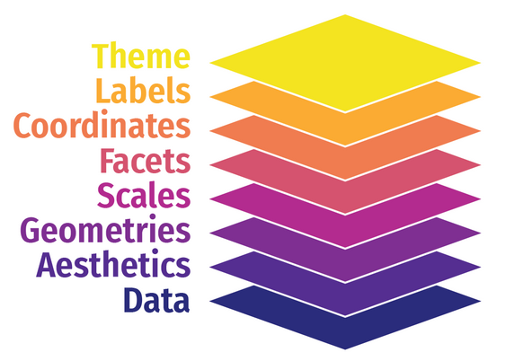Graphs with ggplot2
Step 1: Load the ggplot2 package:
Step 2: provide the data (as dataframe or tibble), we will use the indo_rct data from the package medicaldata:
Graphs with ggplot2

Graphs with ggplot2
Step 3: define the aesthetics layer:
Graphs with ggplot2

Graphs with ggplot2
Step 4: define the geometry layer:
Graphs with ggplot2
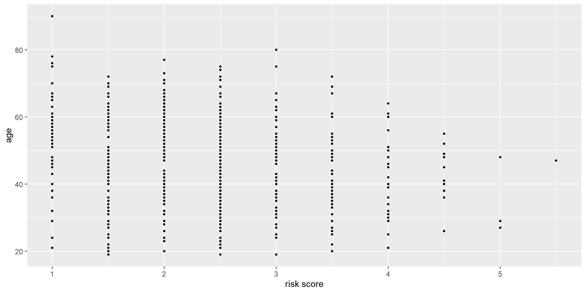Graphs with ggplot2
We can now add another geometry on top of it!
Graphs with ggplot2

Graphs with ggplot2
Maybe we should create separate boxplots for each risk group?
# load packages
library(ggplot2)
library(medicaldata)
indo_rct %>%
# create a categorical variable based on the risk score
mutate(risk_cat = factor(risk)) %>%
# define the aesthetics
ggplot(aes(x = risk, y = age, group = risk_cat)) +
# simple scatter plot
geom_point(size = 1) +
# add a boxplot on top
geom_boxplot(alpha = 0.3)Graphs with ggplot2

Graphs with ggplot2
We could also use different color for different groups:
# load packages
library(ggplot2)
library(medicaldata)
indo_rct %>%
# create a categorical variable based on the risk score
mutate(risk_cat = factor(risk)) %>%
# define the aesthetics
# group, color, shape within the aes() always refers to a grouping
# and you need to provide a character or factor variable
# a legend is provided automatically
ggplot(aes(x = risk, y = age, color = risk_cat)) +
# simple scatter plot
geom_point(size = 1) +
# add a boxplot on top
geom_boxplot(alpha = 0.3)Graphs with ggplot2

Graphs with ggplot2
Let’s jitter the points a little:
# load packages
library(ggplot2)
library(medicaldata)
indo_rct %>%
# create a categorical variable based on the risk score
mutate(risk_cat = factor(risk)) %>%
# define the aesthetics
# group, color, shape within the aes() always refers to a grouping
# and you need to provide a character or factor variable
# a legend is provided automatically
ggplot(aes(x = risk, y = age, color = risk_cat)) +
# simple scatter plot
# geom_point(size = 1) +
# add a jitter scatter plot instead
geom_jitter(size = 1, alpha = 0.8, width = 0.1) +
# add a boxplot on top
geom_boxplot(alpha = 0.3)Graphs with ggplot2
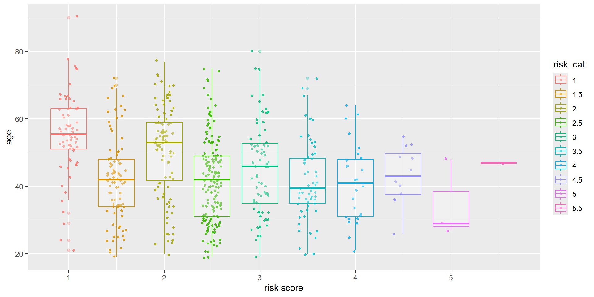Graphs with ggplot2
Step 5: add a label layer:
# load packages
library(ggplot2)
library(medicaldata)
indo_rct %>%
# create a categorical variable based on the risk score
mutate(risk_cat = factor(risk)) %>%
# define the aesthetics
# group, color, shape within the aes() always refers to a grouping
# and you need to provide a character or factor variable
# a legend is provided automatically
ggplot(aes(x = risk, y = age, color = risk_cat)) +
# simple scatter plot
# geom_point(size = 1) +
# add a jitter scatter plot instead
geom_jitter(size = 1, alpha = 0.8, width = 0.1) +
# add a boxplot on top
geom_boxplot(alpha = 0.3) +
# add axis labels and plot title
labs(
title = "Age Distribution by Risk",
x = "Risk score",
y = "Age"
)Graphs with ggplot2
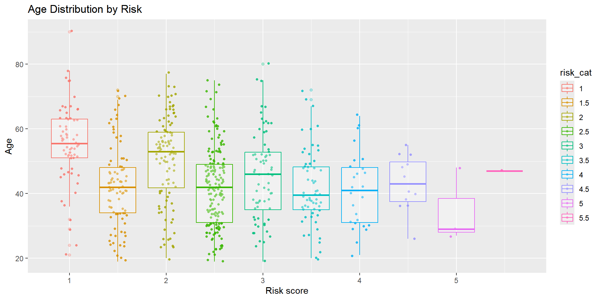Graphs with ggplot2
Step 6: add a theme layer:
# load packages
library(ggplot2)
library(medicaldata)
indo_rct %>%
# create a categorical variable based on the risk score
mutate(risk_cat = factor(risk)) %>%
# define the aesthetics
# group, color, shape within the aes() always refers to a grouping
# and you need to provide a character or factor variable
# a legend is provided automatically
ggplot(aes(x = risk, y = age, color = risk_cat)) +
# simple scatter plot
# geom_point(size = 1) +
# add a jitter scatter plot instead
geom_jitter(size = 1, alpha = 0.8, width = 0.1) +
# add a boxplot on top
geom_boxplot(alpha = 0.3) +
# add axis labels and plot title
labs(
title = "Age Distribution by Risk",
x = "Risk score",
y = "Age"
) +
# add a theme
theme_minimal()Graphs with ggplot2
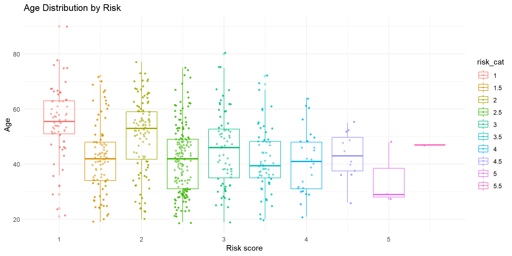Graphs with ggplot2
You can customize a lot of things, checkout help(theme). For now, let’s format the text and adjust the legend position and title:
# load packages
library(ggplot2)
library(medicaldata)
indo_rct %>%
# create a categorical variable based on the risk score
mutate(risk_cat = factor(risk)) %>%
# define the aesthetics
# group, color, shape within the aes() always refers to a grouping
# and you need to provide a character or factor variable
# a legend is provided automatically
ggplot(aes(x = risk, y = age, color = risk_cat)) +
# simple scatter plot
# geom_point(size = 1) +
# add a jitter scatter plot instead
geom_jitter(size = 1, alpha = 0.8, width = 0.1) +
# add a boxplot on top
geom_boxplot(alpha = 0.3) +
# add axis labels and plot title
labs(
title = "Age Distribution by Risk",
x = "Risk score",
y = "Age"
) +
# add a theme
theme_minimal() +
# adjust text formatting
theme(
plot.title=element_text(size=15, face="italic"),
axis.text.x=element_text(size=7),
axis.text.y=element_text(size=7),
axis.title.x=element_text(size=12),
axis.title.y=element_text(size=12),
legend.text=element_text(size=10),
# position = "none" removes the legend entirely from the plot
legend.position = "bottom") +
# adjust the legend title (this is technically not the theme layer)
scale_color_discrete(name="Risk score group") Graphs with ggplot2
Graphs with ggplot2
Step 7: add a scale layer:
# load packages
library(ggplot2)
library(medicaldata)
indo_rct %>%
# create a categorical variable based on the risk score
mutate(risk_cat = factor(risk)) %>%
# define the aesthetics
# group, color, shape within the aes() always refers to a grouping
# and you need to provide a character or factor variable
# a legend is provided automatically
ggplot(aes(x = risk, y = age, color = risk_cat)) +
# simple scatter plot
# geom_point(size = 1) +
# add a jitter scatter plot instead
geom_jitter(size = 1, alpha = 0.8, width = 0.1) +
# add a boxplot on top
geom_boxplot(alpha = 0.3) +
# add axis labels and plot title
labs(
title = "Age Distribution by Risk",
x = "Risk score",
y = "Age"
) +
# add a theme
theme_minimal() +
# adjust text formatting
theme(
plot.title=element_text(size=15, face="italic"),
axis.text.x=element_text(size=7),
axis.text.y=element_text(size=7),
axis.title.x=element_text(size=12),
axis.title.y=element_text(size=12),
legend.text=element_text(size=10),
# position = "none" removes the legend entirely from the plot
legend.position = "bottom") +
# adjust the legend title (this is technically not the theme layer)
scale_color_discrete(name="Risk score group") +
# adjust the y axis
scale_y_continuous(breaks = seq(0, max(indo_rct$age), 10))Graphs with ggplot2
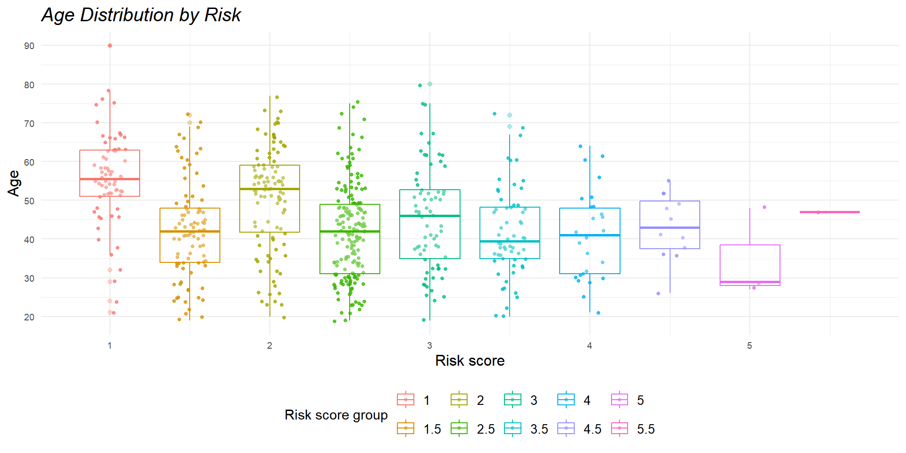Graphs with ggplot2
You can also use scales for color (implicitly we already did it for our risk categories). Lat’s look at a continuous scale example:
# load packages
library(ggplot2)
library(medicaldata)
indo_rct %>%
# create a categorical variable based on the risk score
mutate(risk_cat = factor(risk)) %>%
# define the aesthetics
# group, color, shape within the aes() always refers to a grouping
# and you need to provide a character or factor variable
# a legend is provided automatically
ggplot(aes(x = risk, y = age, group = risk_cat)) +
# simple scatter plot
# geom_point(size = 1) +
# add a jitter scatter plot instead
# define age to be the variable to which the color scale is applied
geom_jitter(aes(color = age), size = 1, alpha = 0.8, width = 0.1) +
# add a boxplot on top
geom_boxplot(alpha = 0.3) +
# add axis labels and plot title
labs(
title = "Age Distribution by Risk",
x = "Risk score",
y = "Age"
) +
# add a theme
theme_minimal() +
# adjust text formatting
theme(
plot.title=element_text(size=15, face="italic"),
axis.text.x=element_text(size=7),
axis.text.y=element_text(size=7),
axis.title.x=element_text(size=12),
axis.title.y=element_text(size=12),
legend.text=element_text(size=10),
# position = "none" removes the legend entirely from the plot
legend.position = "bottom") +
# adjust the legend title (this is technically not the theme layer)
# scale_color_discrete(name="Risk score group") +
# add acontinuous scale for the Y variable and adjust the legend title
scale_color_distiller(palette = "Blues", name="Age distribution") +
# adjust the y axis
scale_y_continuous(breaks = seq(0, max(indo_rct$age), 10))Graphs with ggplot2
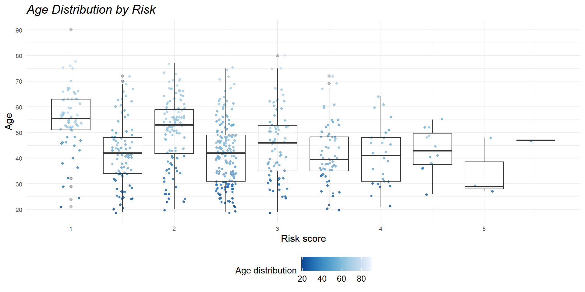Graphs with ggplot2
Maybe we should add a regression line as well? (this is a geometry layer)
# load packages
library(ggplot2)
library(medicaldata)
indo_rct %>%
# create a categorical variable based on the risk score
mutate(risk_cat = factor(risk)) %>%
# define the aesthetics
# group, color, shape within the aes() always refers to a grouping
# and you need to provide a character or factor variable
# a legend is provided automatically
ggplot(aes(x = risk, y = age, group = risk_cat)) +
# simple scatter plot
# geom_point(size = 1) +
# add a jitter scatter plot instead
# define age to be the variable to which the color scale is applied
geom_jitter(aes(color = age), size = 1, alpha = 0.8, width = 0.1) +
# add a boxplot on top
geom_boxplot(alpha = 0.3) +
# add a regression line
geom_smooth(aes(group = 1), method = "lm", color = "orange") +
# add axis labels and plot title
labs(
title = "Age Distribution by Risk",
x = "Risk score",
y = "Age"
) +
# add a theme
theme_minimal() +
# adjust text formatting
theme(
plot.title=element_text(size=15, face="italic"),
axis.text.x=element_text(size=7),
axis.text.y=element_text(size=7),
axis.title.x=element_text(size=12),
axis.title.y=element_text(size=12),
legend.text=element_text(size=10),
# position = "none" removes the legend entirely from the plot
legend.position = "bottom") +
# adjust the legend title (this is technically not the theme layer)
# scale_color_discrete(name="Risk score group") +
# add acontinuous scale for the Y variable and adjust the legend title
scale_color_distiller(palette = "Blues", name="Age distribution") +
# adjust the y axis
scale_y_continuous(breaks = seq(0, max(indo_rct$age), 10))Graphs with ggplot2
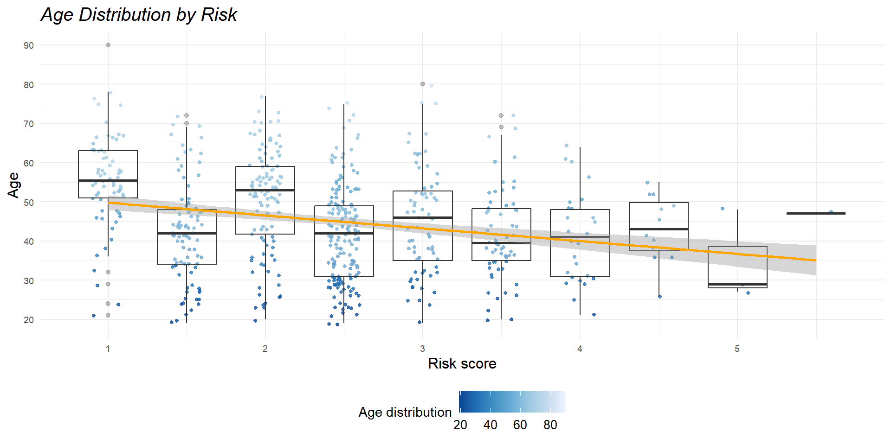Graphs with ggplot2
Step 8: the facets:
# load packages
library(ggplot2)
library(medicaldata)
plot1 <- indo_rct %>%
# create a categorical variable based on the risk score
mutate(risk_cat = factor(risk)) %>%
# define the aesthetics
# group, color, shape within the aes() always refers to a grouping
# and you need to provide a character or factor variable
# a legend is provided automatically
ggplot(aes(x = risk, y = age, group = risk_cat)) +
# simple scatter plot
# geom_point(size = 1) +
# add a jitter scatter plot instead
# define age to be the variable to which the color scale is applied
geom_jitter(aes(color = age), size = 1, alpha = 0.8, width = 0.1) +
# add a boxplot on top
geom_boxplot(alpha = 0.3) +
# add a regression line
geom_smooth(aes(group = 1), method = "lm", color = "orange") +
# add axis labels and plot title
labs(
title = "Age Distribution by Risk",
x = "Risk score",
y = "Age"
) +
# add a theme
theme_minimal() +
# adjust text formatting
theme(
plot.title=element_text(size=15, face="italic"),
axis.text.x=element_text(size=7),
axis.text.y=element_text(size=7),
axis.title.x=element_text(size=12),
axis.title.y=element_text(size=12),
legend.text=element_text(size=10),
# position = "none" removes the legend entirely from the plot
legend.position = "bottom") +
# adjust the legend title (this is technically not the theme layer)
# scale_color_discrete(name="Risk score group") +
# add acontinuous scale for the Y variable and adjust the legend title
scale_color_distiller(palette = "Blues", name="Age distribution") +
# adjust the y axis
scale_y_continuous(breaks = seq(0, max(indo_rct$age), 10))
plot1 + facet_wrap( ~ rx) Graphs with ggplot2
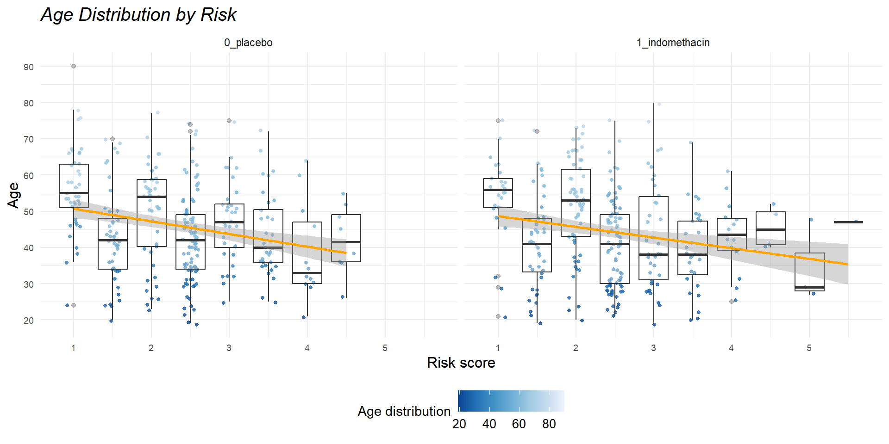Graphs with ggplot2
Arrangement of different plots produced by ggplot
Graphs with ggplot2

The R graph gallery
Take a look at all the possibilities you have!
The end
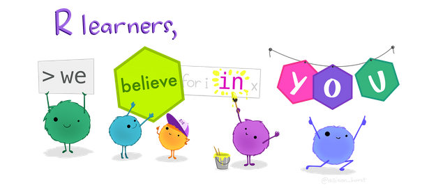Source: https://allisonhorst.com
Move to the next session
Move to the next session
Further operations on vectors
Materials / resources for different analyses
Further reporting topics
- Referencing within RMD/QMD produced docs
- Citations and bibliography in RMD/QMD
- Sectioning (portrait/landscape for word
- What to be aware of with export do docx
Grpahs
Move to the next session
Graphs
base R plots
- concept, arguments, export, arranging: base plots into pane with par(mfrow = c(2,2)) and dev.off()
- tutorial: https://intro2r.com/graphics_base_r.html
ggplot
- export (ggsave)
- interactive plots with shiny
- piping with ggplot2
plots from models (sJplot and interactions)
Questions asked last time
footnotes with
gtsummary
Questions asked last time
add n_events, n_miss to survival tables and model tables with
gtsummaryadjust p-value formatting with
gtsummarystring based on condition
digits
Introduction to R - Day 3